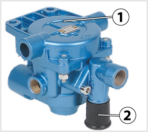
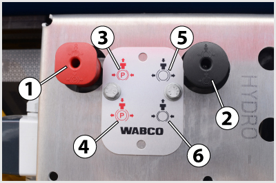
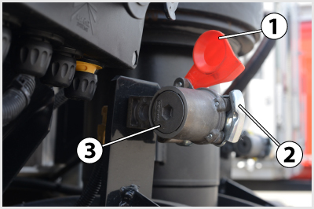

- 382. Működésbe lép-e automatikusan a pótkocsi üzemifék-rendszere, ha a kétvezetékes pótkocsi fékrendszer egyik vezetéke leszakad? #704414
- Ha a töltővezeték sérül meg, akkor a pótkocsi azonnal automatikusan befékeződik, ha a vezérlővezeték sérül, akkor csak a következő fékezéskor következik be automatikus befékeződés.
- Bármelyik vezeték sérülése esetén azonnal bekövetkezik a pótkocsi automatikus befékeződése.
- Ha a vezérlővezeték sérül meg, akkor a pótkocsi azonnal automatikusan befékeződik, ha a töltővezeték sérül, akkor csak a következő fékezéskor következik be automatikus befékeződés.
- 383. A kétvezetékes pótkocsi-fékrendszer működtetésekor... #704536
- a vezérlővezetékben a fékezés mértékének megfelelő túlnyomás alakul ki.
- a vezérlővezetékben a fékezés mértékével arányosan csökken a nyomás.
- a töltővezetékben a fékezés mértékével arányosan csökken a nyomás.
- a töltővezeték nyomása nő, a vezérlővezetéké csökken és a pótkocsi fékezése a két nyomás különbségével lesz arányos.

- 384. A képen látható 2-es jelű alkatrész... #704604
- a kétvezetékes pótkocsifékező-rendszer fékező (vezérlő) vezetékének kapcsolófeje.
- a kétvezetékes pótkocsifékező-rendszer töltővezetékének kapcsolófeje.
- egy hidraulikus fékcsatlakozó.
- a billenő felépítmény működtetésére szolgáló hidraulikus munkahenger tápcsatlakozója.

- 385. A képen látható, oldószeleppel is felszerelt pótkocsi fékezőszelepet... #704644
- a pótkocsira szerelik.
- a vontatóra szerelik.
- a pótkocsira és a vontatóra is szerelhetik.
- 386. Mire szolgál a képen látható 1-es jelű, pótkocsi fékező szelepre felszerelt, 2-es jelű oldószelep? #704645
- A lekapcsolt pótkocsi automatikusan befékeződő kerékfékszerkezeteinek oldására.
- A lekapcsolt forgózsámolyos pótkocsi automatikusan befékeződő első kerékfékszerkezeteinek oldására.
- A pótkocsi kapcsolószerkezet reteszelésének az oldására.
- A pótkocsifékező-rendszer kapcsolófejeinek oldására.

- 387. Mire szolgál a pótkocsi képen látható 2-es jelű kezelőeleme? #704697
- A lekapcsolt pótkocsi automatikusan befékeződő kerékfékszerkezeteinek az oldására.
- A rugóerőtárolós rögzítőfék működtetésére.
- A lekapcsolt forgózsámolyos pótkocsi automatikusan befékeződő első kerékfékszerkezeteinek az oldására.
- A pótkocsi terhelési állapotának beállítására a megfelelő nagyságú fékezőerők érdekében.
- 388. Ha a lekapcsolt pótkocsit, melyen a 2-es jelű oldószelep oldott, az 1-es jelű rögzítőfék szelep rögzített állásban van, vontatóra kapcsolják és a töltővezeték nyomás alá kerül, akkor... #704698
- az oldószelep automatikusan visszavált a normál üzemi helyzetébe.
- a rögzítőfék szelepe automatikusan visszatér az oldott helyeztébe.
- az oldószelep automatikusan visszavált a normál üzemi, a rögzítőfék szelepe pedig az oldási helyzetébe.
- mindkét szelep az eredeti helyzetében marad.

- 389. A képen látható 3-as jelű fedél kicsavarása után hozzáférhető a... #704699
- a kétvezetékes pótkocsifékező-rendszer töltővezetékének kapcsolófejével egybeépített csőszűrő betétje.
- a kétvezetékes pótkocsifékező-rendszer töltővezetékének zárószelepe.
- a kétvezetékes pótkocsifékező-rendszer fékező (vezérlő) vezetékének kapcsolófejével egybeépített csőszűrő betétje.
- a kétvezetékes pótkocsifékező-rendszer fékező (vezérlő) vezetékének zárószelepe.
- 390. Hogyan vannak elhelyezve a kapcsolófejek a vonóháromszöges és központi tengelyes pótkocsikon és vontatóikon? #704903
- A vontató jármű kapcsolófejei rögzítettek, a pótkocsi kapcsolófejeit tömlőre, vagy spirálcsőre szerelik.
- A pótkocsi kapcsolófejei rögzítettek, a vontató jármű kapcsolófejeit tömlőre, vagy spirálcsőre szerelik..
- A vontató járművön és a pótkocsin is rögzített kapcsolófejeket alkalmaznak, melyeket tömlővel, vagy spirálcsővel kapcsolnak össze.
- 391. Kétvezetékes fékrendszer esetén a nyerges járműszerelvény melyik tagjához vannak rögzítve a kapcsolófejek? #704904
- A félpótkocsihoz.
- A vontatóhoz.
- Mindkettőhöz. A rögzített kapcsolófejeket mindkét végükön kapcsolófejekkel ellátott spirálcsövekkel kötik össze.
- 392. Fel lehet-e cserélni a kétvezetékes pótkocsi légvezetékeit? #704906
- Nem, mert felöntésekkel és ütközőkkel látják el a kapcsolófejeket, amelyek megakadályozzák a felcserélést.
- Fel lehet cserélni, mert csak színjelöléssel vannak megkülönböztetve.
- Nem lehet felcserélni, mert a légvezetékek különböző hosszúságúak.
- Fel lehet cserélni, de a fékrendszer kialakítása olyan, hogy az ebben az esetben is működőképes.
- 393. A fékvezetékek kapcsolófejei a pótkocsikon... #704907
- szabad átmenetűek.
- szelepes kivitelűek.
- lehetnek szabad átmenetűek és szelepes kivitelűek egyaránt.
- visszacsapószelepesek.
- 394. Kétvezetékes pótkocsi-fékrendszer esetén a pótkocsi üzemi fékjét... #704909
- a vontató két üzemi fékköre együtt és külön-külön is (ha az egyik fékkör meghibásodott) képes azonos hatékonysággal működtetni.
- a vontató két üzemi fékköre együtt és külön-külön is (ha az egyik fékkör meghibásodott) képes működtetni - utóbbi esetben viszont csak fele akkora hatékonysággal.
- általában csak a vontató egyik üzemi fékkörével vezérlik, ezért ennek a fékkörnek a hibája esetén a pótkocsin sincs üzemi fékhatás.
- 395. Kétvezetékes fékrendszer töltővezetékének leürülése (sérülése, lekapcsolása) esetén általában... #704911
- a pótkocsi üzemi fékje automatikusan működésbe lép.
- a vontató rögzítő fékje automatikusan működésbe lép.
- a pótkocsi nem fékeződik be.
- a vontató üzemi fékje automatikusan működésbe lép.
- 396. Töltődik-e a kétvezetékes pótkocsi légtartálya a pótkocsi fékezése alatt? #704912
- Igen.
- Nem.
- 397. Kétvezetékes fékrendszer fékezővezetékének sérülése esetén... #704913
- a pótkocsi-fékvezérlőszelep a töltővezeték leürítésével automatikusan működésbe hozza a pótkocsi üzemi fékjét a vontatón végzett első fékezéskor.
- a pótkocsi rögzítő fékje automatikusan működésbe lép.
- a pótkocsi üzemi fékje automatikusan működésbe lép.
- nem valósul meg automatikus fékezés.
- 398. Mi a kétvezetékes, légfékes pótkocsin található oldószelep feladata? #704920
- A vontatóról lekapcsolt és automatikusan befékeződött pótkocsi fékek oldása a pótkocsi légtartály sűrített levegőjének segítségével.
- A pótkocsi lekapcsolása esetén a rögzítőfék működtetése.
- A pótkocsi felkapcsolása esetén a rögzítőfék kiiktatása.
- A pótkocsi terhelési állapotának beállítása a megfelelő fékerő-korlátozás elérése érdekében.
- 399. Milyen színekkel jelölik a kétvezetékes pótkocsi-fékező rendszer kapcsolófejeit, illetve az azokhoz vezető spirálcsöveket? #714616
- A töltővezék esetén piros, a fékező (vezérlő) vezeték esetén sárga színnel.
- A töltővezék esetén sárga, a fékező (vezérlő) vezeték esetén piros színnel.
- Nem szükségesek színjelölések, mert a kapcsolófejek nem cserélhetők fel.
- A töltővezék esetén kék, a fékező (vezérlő) vezeték esetén fehér színnel.
- 400. A képen látható 3-as jelű házban található a kétvezetékes pótkocsifékező-rendszer... #721190
- fékező (vezérlő) vezetékének kapcsolófejjel egybeépített csőszűrő betétje.
- fékező (vezérlő) vezetékének automatikus zárószelepe.
- töltővezetékének kapcsolófejjel egybeépített csőszűrő betétje.
- töltővezetékének automatikus zárószelepe.
- 401. Általában milyen színnel jelölik a kétvezetékes pótkocsi töltő- és fékezővezetékeinek kapcsolófejeit? #721191
- A töltővezetékét piros, a fékezővezetékét sárga színnel.
- A töltővezetékét fekete, a fékezővezetékét zöld színnel.
- A töltővezetékét fehér a fékezővezetékét kék színnel.
- A töltővezetékét sárga, a fékezővezetékét piros színnel.
- 402. Mi a feladata a kapcsolófejjel egybeépített, vagy az után a pótkocsi légvezetékébe beépített csőszűrőnek? #721192
- A légfékrendszerbe bejutó szilárd szennyeződések kiszűrése.
- A légfékrendszerbe bejutó és lecsapódó víz kiszűrése.
- A légfékrendszer elemeinek kenéséből bejutó olaj és zsír kiszűrése.
- 403. Kétvezetékes fékrendszerrel felszerelt szerelvény fékezése során a vontató fékpedáljának lenyomásakor... #721193
- a pótkocsi légtartályából a féklevegő a pótkocsi kerékfékhengereibe áramlik.
- a vontató légtartályából a féklevegő a pótkocsi kerékfékhengereibe áramlik.
- a vontató légtartályából a féklevegő a pótkocsi rugóerőtárolós munkahengereibe áramlik.
- a pótkocsi légtartályából a féklevegő a pótkocsi rugóerőtárolós munkahengereibe áramlik.
- 404. A kétvezetékes, légfékes pótkocsin alkalmazott oldószelep... #721194
- gombja fekete, kör alakú és a pótkocsi felkapcsolásakor automatikusan képes visszatérni a fékezési helyzetbe.
- gombja piros, négyszögletű és a pótkocsi felkapcsolásakor automatikusan képes visszatérni a fékezési helyzetbe.
- gombja fekete, kör alakú és a pótkocsi felkapcsolásakor minden esetben vissza kell állítani a fékezési helyzetbe.
- gombja piros, négyszögletű és a pótkocsi felkapcsolásakor minden esetben vissza kell állítani a fékezési helyzetbe.
- 405. Mely szerelvények biztosítják a vontató és a pótkocsi összehangolt fékezését? #724213
- A vontatón található pótkocsi-fékvezérlőszelep és a pótkocsin található pótkocsi-fékezőszelep.
- A vontatón található pótkocsi-fékezőszelep és a pótkocsin található pótkocsi-fékvezérlőszelep.
- A vontatón található pótkocsi-fékezőszelep és a pótkocsin található relészelep.
- A vontatón található relészelep és a pótkocsin található pótkocsi-fékezőszelep.
- 406. A pótkocsi kétvezetékes légfékrendszerének melyik eleme védi meg a pótkocsi-légtartályt a leürüléstől sérülés vagy lekapcsolás esetén? #724214
- A pótkocsi fékező szelep.
- A pótkocsi töltővezetéke.
- A pótkocsi fékvezérlő-szelep.
- A szelepes kapcsolófejek.